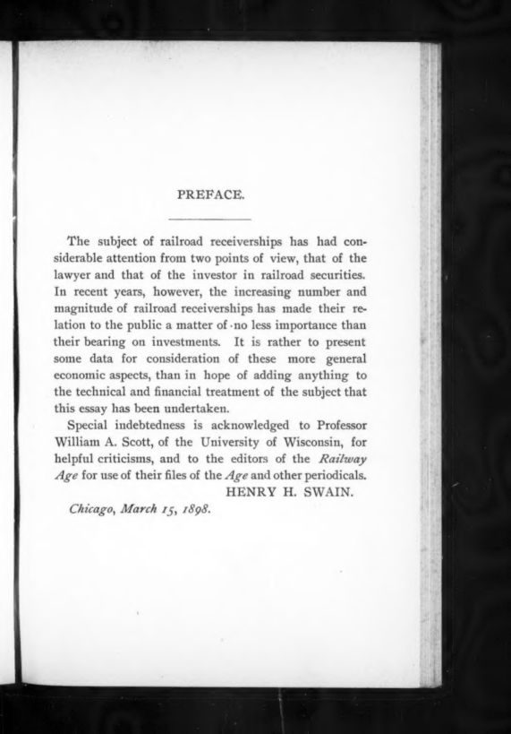

Swain, 1898: as ferrovias americanas nas mãos dos tribunais
Leitura: 12 min
Henry H. Swain conta como mais de 700 ferrovias americanas passaram pela administração judicial em 25 anos, por que faliram, o que os administradores fizeram com elas e como a lei deveria mudar.


Em 1893, ano do pânico que Henry H. Swain chama de o mais desastroso já vivido pelo país, 132 companhias ferroviárias americanas foram entregues a administradores judiciais, com 27.570 milhas de linha. No ano seguinte foram só 50, mas Swain adverte contra a leitura otimista: no começo de 1894 quase todas as ferrovias de 1893 continuavam nas mãos dos tribunais, e qualquer acréscimo indicava que a crise persistia.
Os números estão em Economic Aspects of Railroad Receiverships, nº 2 do terceiro volume dos Economic Studies, de abril de 1898. Swain, que assina o prefácio em Chicago, em março de 1898, diz que o tema já fora estudado por advogados e por investidores em títulos ferroviários, e que pretende reunir dados sobre seus aspectos econômicos mais gerais, isto é, sua relação com o público. Agradece a William A. Scott, da University of Wisconsin, e aos editores da Railway Age, cujos arquivos usou. O estudo tem quatro capítulos: natureza da administração judicial, história e estatística, efeitos e futuro, além de um apêndice sobre as fontes.
O que é a administração judicial de uma ferrovia?
O administrador judicial (receiver) é a pessoa nomeada por um tribunal para guardar um bem durante um litígio e geri-lo ou dispor dele como o tribunal mandar. O instituto, explica Swain, servia para impedir que quem tem a posse de um bem disputado o explore até a ruína antes da decisão. Seus princípios estavam fixados mais de meio século antes das ferrovias e foram pensados para heranças, sociedades e bancos em liquidação, em que o administrador guardava e distribuía bens. Uma ferrovia é outra coisa: patrimônio espalhado, enorme, com muitos empregados e caráter semipúblico.
Na Inglaterra, antes da lei das companhias ferroviárias de 1867, os tribunais relutavam em nomear administradores com poder de operar ferrovias. Nos Estados Unidos, a operação pelo administrador tornou-se a regra, e o resultado foi um sistema sem paralelo em outros países. O legislador quase não interveio. Os tribunais federais, que cuidam da maior parte dos casos, têm pouca lei a seguir; uma lei de 3 de março de 1887 manda o administrador obedecer às leis do estado onde estão os bens, permite processá-lo sem licença prévia do tribunal e proíbe o juiz de nomear parente próximo. As leis estaduais, em geral vagas, deixam aos juízes quase toda a discrição.
A exceção é o Texas. Sua lei de 1889, a mais extensa sobre o tema, exige que o administrador seja cidadão texano com direito a voto, proíbe a companhia de pedir administração para si mesma, fixa a ordem de pagamento dos credores e limita a três anos a gestão de qualquer empresa pelo tribunal.
Quantas ferrovias passaram pelos tribunais?
A tabela anual de Swain, de 1870 a 1897, mostra picos em torno das crises: 33 casos em 1874 e 43 em 1875; 40 em 1884, com 8.731 milhas, e 44 em 1885; os 132 de 1893; e 21 em 1897, com 1.536 milhas. Em 1877, mais de 18% da malha estava nas mãos de administradores; em nenhum momento, nem em 1894, a proporção passou muito de 20%. A duração média, calcula ele, ficou entre dois e três anos. O caso extremo é o da Vermont Central, sob administradores por 29 anos, de 1855 a 1884.
Por que as ferrovias quebravam?
O motivo imediato quase sempre era o atraso nos juros dos títulos hipotecários. As causas desse atraso, quando não intencional, Swain as agrupa em três: a receita, as despesas de operação e os encargos fixos. Na receita, a regra mais óbvia é que os anos de depressão foram os mais férteis em falências, o que, para ele, derruba a ideia de que a legislação foi a causa principal: as falências acompanharam crises gerais em setores que nenhuma lei ferroviária atingia.
“Os anos de depressão geral dos negócios foram os mais prolíficos em administrações judiciais.” (years of general business depression have been the ones most prolific of receiverships)
As crises, porém, não atingiam todas igualmente. No ano encerrado em 30 de junho de 1894, a receita de cargas caiu 15,63% no país, e a de passageiros, 5,35%, com alta em algumas regiões por causa da Feira Mundial de Chicago. Das 24 companhias operadoras com 300 milhas ou mais que estavam em administração judicial naquela data, 19 tinham peso das cargas na receita bem acima da média. Quanto à lei de comércio interestadual de 1887, Swain mostra que, salvo em 1893, a quilometragem posta em administração nunca voltou aos níveis de 1875, 1884 e 1885, embora a malha tivesse crescido quase 42% de 1884 a 1893. No Iowa, onde o controle estadual de tarifas foi mais longe, houve poucos casos.
O fator que de fato reduziu receitas, para Swain, foi a concorrência, sobretudo a de linhas construídas sem necessidade. Ele conta seis companhias disputando o tráfego entre Chicago e as Twin Cities, sete entre Chicago e Kansas City e seis entre Nova York e Buffalo. A Erie só conseguia passageiros de primeira classe entre Nova York e Chicago cobrando dois dólares menos que as linhas da Pennsylvania, num percurso 83 milhas mais longo. Muitas vezes quem quebrava era a linha nova, com traçado pior ou sem tráfego local. Os sete anos anteriores a 1887 aumentaram a malha em mais de 57%, e só 1887 acrescentou mais de 9%.
“A construção de ferrovias desnecessárias tem sido um dos piores traços da história ferroviária americana.” (the building of unnecessary roads has been one of the worst features of American railroad history)
Qual era o peso da dívida?
Do lado das despesas, os encargos fixos são o ponto decisivo. Eles pesam mais justamente quando o tráfego cai, porque a operação pode ser cortada e os juros não. A média dos encargos fixos sobre as despesas totais ia de 25% a 44% conforme a região e passava de 33% no país; quase todas as companhias em administração judicial em junho de 1894 estavam acima da média de seu grupo. Nos Estados Unidos, os títulos de renda, que só pagam juros se houver lucro, eram raros: em 1895, mais de 91% deles não pagavam nada.
Swain registra também os casos sem insolvência. A Wabash, St. Louis & Pacific pediu ela mesma, em 1884, a nomeação de administradores, para impedir que os credores de cada hipoteca tomassem partes da rede, e a Texas & Pacific decidiu, em 1885, parar de pagar juros e pôr a ferrovia nas mãos de dois administradores, um deles seu vice-presidente. São as administrações “amigáveis”. Outras nasciam de brigas entre acionistas ou de disputas sobre arrendamentos.
Quem eram os administradores?
A teoria pedia um administrador desinteressado. A prática, observa Swain, foi nomear representantes de interesses particulares, o que gerou a maior parte das queixas contra o sistema. A desculpa era a falta de pessoas que conhecessem ferrovias; ainda assim, ele considera a escolha de um dirigente da casa preferível a tratar o cargo como favor do juiz, e pouco melhor a de dirigentes de outras ferrovias, que tenderiam a subordinar a linha à sua. Quanto ao desfecho, dos casos encerrados em 25 anos, mais de 87% terminaram em venda judicial e reorganização, quase 11% em devolução à companhia e menos de 2% em abandono. Noventa e sete ferrovias voltaram uma segunda vez aos tribunais, e 26, uma terceira.
O que os administradores faziam com as ferrovias?
Como uma ferrovia parada perde o tráfego, os contratos e às vezes a própria concessão, os tribunais autorizaram os administradores a operá-las e, depois, a fazer quase tudo o que parecesse necessário. Em 30 de junho de 1894, das 192 ferrovias em administração judicial, 137 eram operadas pelos próprios administradores. Eles trocaram trilhos de ferro por aço, refizeram pontes, mudaram bitolas, compraram material rodante, terminais e linhas subsidiárias e chegaram a construir ferrovias novas. Em 1896, os administradores da Baltimore & Ohio foram autorizados a comprar de uma só vez 5.000 vagões de carga e 75 locomotivas. O dinheiro vinha sobretudo dos certificados do administrador, dívida com prioridade sobre as hipotecas.
Para Swain, bem conduzida, a administração salvou muitas ferrovias e deu ao público linhas melhores; a queixa razoável é que as melhorias costumam ser pagas por credores sem voz na decisão. Ele não encontra diferença clara entre ferrovias em administração e as demais no corte de tarifas, e a absorção por grandes sistemas foi menos frequente do que se supunha.
Como ficaram os empregados e o público?
Para os empregados, a administração costumava trazer pagamento em dia e até a quitação de atrasados, porque os tribunais mandavam pagar salários antes dos encargos fixos. A Suprema Corte, em 1878, no voto do presidente Waite, exigiu do credor hipotecário que pede socorro à equidade que se submeta à regra de fazer equidade para obter equidade. Mas vieram também cortes de salários, demissões e jornadas maiores: em 1896, 4.500 empregados da Baltimore & Ohio passaram de oito para dez horas diárias nas oficinas. O tribunal servia de corte de arbitragem, mas também punia grevistas por desacato; em dezembro de 1893, uma injunção proibiu cerca de doze mil empregados da Northern Pacific de deixar o serviço em conjunto, decisão revista em recurso em outubro de 1894.
Viajantes e embarcadores quase não notavam a mudança, diz o autor, embora houvesse casos como o de um administrador que, em 1885, cobrava dos demais embarcadores de petróleo 35 centavos por barril, contra 10 centavos da Standard Oil, e foi destituído pelo juiz Baxter. Na Carolina do Sul, os administradores de um tribunal federal recusaram, com aval da corte, impostos estaduais de cerca de US$ 100 mil e US$ 60 mil, e xerifes que tentaram cobrá-los foram presos por desacato.
O que Swain propõe?
O último capítulo parte de três premissas: a malha americana, quase igual à do resto do mundo somado, já está construída; os hábitos dos investidores só mudam aos poucos; e reformas complexas fracassam. Para remover as causas, Swain sugere revogar as leis contra fusões, dar à Interstate Commerce Commission poder de fixar tarifas mínimas entre pontos concorrentes, legalizar os pools se o poder de fixar máximos ficar claro, reprimir a revenda de bilhetes e negar concessão a ferrovias sem perspectiva de tráfego.
Para o próprio instituto, propõe codificar a lei federal: limitar os motivos e a duração das administrações, proibir a nomeação de dirigentes ou acionistas da companhia, definir os poderes do administrador, vedar certificados para construir linhas novas, fixar os créditos preferenciais e os prazos de prescrição e esclarecer a competência entre tribunais. Por fim, sugere um tribunal ou comissão federal com poderes judiciais e competência exclusiva sobre as administrações de ferrovias, com recurso à Suprema Corte, que acumularia experiência, formaria administradores e exporia a gestão ao escrutínio público.
“A noção de um administrador elevado acima de toda lei e sujeito apenas ao capricho de um tribunal é intolerável.” (The notion of a receiver as being elevated above all law and subject only to the caprice of a court, is intolerable.)
Na minha leitura
Na minha leitura, o valor do estudo está em tratar a falência ferroviária como problema de estrutura de capital e de concorrência, e não de vilões. Swain separa o choque comum, a depressão, da vulnerabilidade de cada empresa: dívida de juros fixos, peso das cargas na receita, linhas paralelas construídas para dividir um tráfego que não comportava duas. É uma decomposição que qualquer analista de crédito reconheceria.
Também me parece atual a sua desconfiança de um processo concursal deixado à discrição de cada juiz. A administração judicial americana resolvia um problema real, o de manter em operação um ativo que perde valor quando para, mas criava incentivos ruins: dirigentes que pediam a própria nomeação, dívidas novas com prioridade sobre as antigas, credores sem voz nas melhorias. As propostas de regras claras, prazos e um foro especializado antecipam o caminho que as reorganizações empresariais seguiriam depois.
Glossário
- Administração judicial (receivership)
- situação em que um tribunal entrega um bem em litígio, como uma ferrovia insolvente, a um administrador por ele nomeado.
- Administrador judicial (receiver)
- pessoa nomeada pelo tribunal para guardar, operar ou liquidar o bem.
- Execução hipotecária (foreclosure)
- processo pelo qual o credor hipotecário leva o bem a leilão para receber a dívida.
- Encargos fixos
- despesas que não variam com o tráfego, sobretudo juros da dívida e aluguéis de linhas arrendadas.
- Título de renda (income bond)
- título que só paga juros se a empresa tiver lucro suficiente.
- Certificado do administrador (receiver’s certificate)
- dívida emitida pelo administrador com autorização do tribunal, com prioridade sobre as hipotecas.
- Administração amigável
- administração judicial pedida pela própria companhia ou por credores aliados a ela, para afastar outros credores.
- Pool
- acordo entre ferrovias para dividir tráfego ou receitas, proibido pela lei de comércio interestadual de 1887.
- Equidade (equity)
- jurisdição que dá remédios além da indenização e sob a qual correm as administrações judiciais.
Fontes
- Chapter I. The Nature of Receiverships and the Functions of Receivers (pp. 53–65). Internet Archive (número completo, PDF)
- Chapter II. The History and Statistics of Railroad Receiverships in the United States (pp. 66–107). Internet Archive (número completo, PDF)
- Chapter III. Effects of Railroad Receiverships (pp. 108–140). Internet Archive (número completo, PDF)
- Chapter IV. The Future of Railroad Receiverships (pp. 141–157). Internet Archive (número completo, PDF)
- Appendix. On the Sources of Information (pp. 158 ss.). Internet Archive (número completo, PDF)
- Número completo digitalizado (domínio público): Internet Archive.
Documento em domínio público (EUA, publicado antes de 1931), via JSTOR Early Journal Content e Internet Archive. Resumo e comentário do autor deste site, sem afiliação com a American Economic Association. Encontrou um erro? Escreva: a correção é publicada no próprio texto, com data.
← ES 14 · Manual de 1898 e a reunião de Cleveland: gás, tarifas e moeda ES 16 · Carver, 1898: Ohio terceiriza a caça aos bens sonegados →